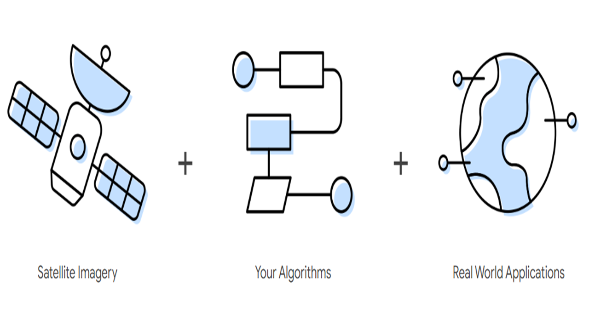
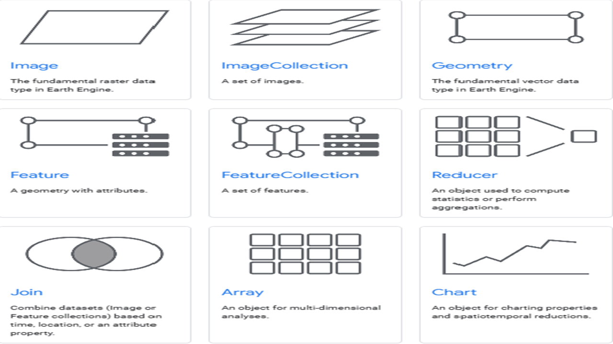
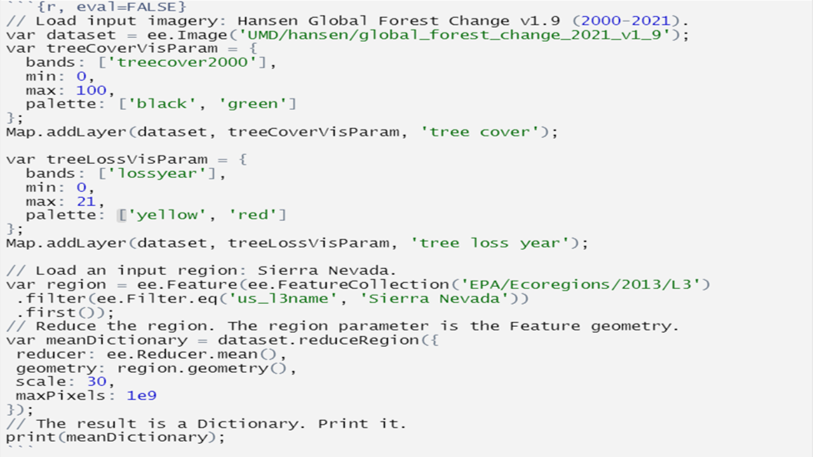
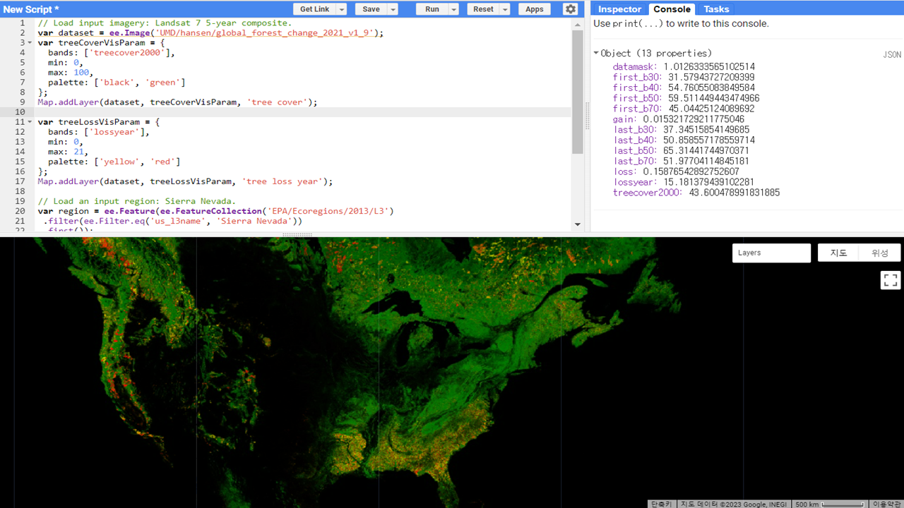
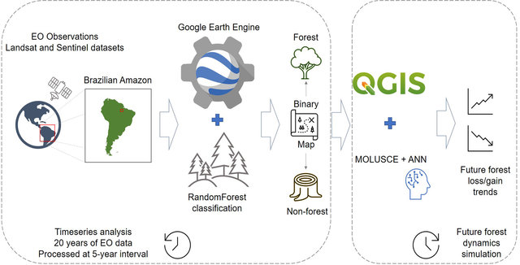
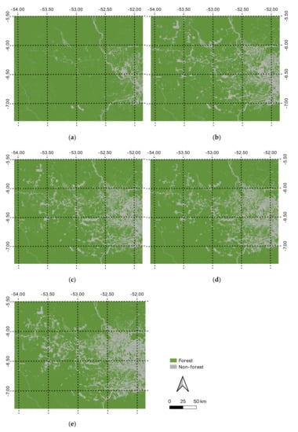
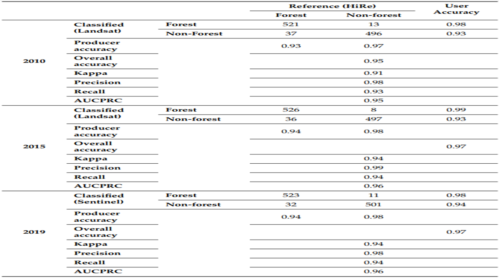

5 Introduction to Google Earth Engine
5.1 Summary
5.1.1 What is Google Earth Engine (GEE)
Google Earth Engine is a planetary-scale geo-spatial analysis platform. It enables users to keep track of changes and quantify differences on Earth’s surface.
5.1.2 Pros & Cons of GEE
The advantages and disadvantages of GEE are as follows:
Pros:
GEE stores various, rich and ready-to-use datasets within its server
Cloud-based processing: quickly analyses big data
User-friendly interface: easy and free access
Enormous potential to collaborate with state-of-the-art technologies (Deep learning and Machine Learning)
Cons:
Easy access could mean the potential possibilities for inappropriate use by some criminals
Dependence on Google: concerns around data privacy and security
Learning curve: coding with Javascript can be challenging
Limited data types: profoundly limited to satellite imagery, which may not provide access to all the data types that people need
5.1.3 Aggregating Pixels in GEE
To allow large computations, GEE provides users with various scale options to choose from. When an image is fed into GEE, many lower resolution versions of the image are pre-computed, and these are known as Image Pyramids.

The lowest level of the image pyramid represents native resolution. The ingested image data are aggregated to a higher pyramid levels until it reaches 256 * 256 pixel tiles. At this aggregation process, GEE uses nearest neighbors by default Google Earth Engine. By default, the pyramid tiles are created by calculating mean values. This is called resampling.

5.1.4 Objects in GEE
There are 9 object classes in GEE. Each class has its own class-specific functions to load and manipulate data.

5.1.5 Applicable Processes in GEE
Reducing images by regions:
By region(s): It reduces all the pixels in the region(s) to a statistic of the pixel data in the region(s). We can take an image and generate statistics for it.
Note. The images of code and result below are adjusted from the lecture and practical. Here, I used the Global Forest Change datasets to see the average reflectance for each band within Sierra Nevada, USA.


Reducing images by neighbourhoods:
By neighbourhoods: The neighbourhoods of a pixel in an image can be used to reduce the image.

5.2 Application
Google Earth Engine has been widely applied, ranging from forest and vegetation studies to medical fields such as malaria (Kumar and Mutanga 2018). The display of satellite imagery on GEE has enabled us to identify any change occurred during a certain period of time. However, I was wondering whether detecting changes in land cover is the only thing that GEE can offer.
In this section, I will focus on how GEE can be applied in collaboration with Machine Learning technologies, and what are the benefits of considering technological fusion.
5.2.1 Monitoring Forest Change in the Amazon Using Multi-Temporal Remote Sensing Data and Machine Learning Classification on Google Earth Engine
Summary: Brovelli, Sun, and Yordanov (2020) aimed to map and monitor forest changes from 2000 to 2019 in a rainforest region in Pará state, Brazil, using satellite imagery and machine learning classification on Google Earth Engine. The results were validated through high-resolution image interpretation and showed a peak in deforestation rates from 2000 to 2006, followed by a decrease and stabilization until 2015, and a slight increase until 2019. Future forest dynamics were simulated based on historical trends, showing a decrease in deforestation rates from 2019 to 2028. The study demonstrated that the approach can provide useful information for forest policy development.
Data:
Building a model: Sentinel-2 and Landsat 5, 7 and 8 were used
Model validation: the China-Brazilian Earth Resources Satellite (CBERS) high-resolution panchromatic data were used to validate the results of the classification.
Model building:
The whole process of building
Random Forest (RF)algorithm was implemented on GEE platform- The training sets - 80% for model building, and 20% for assessing the performance
Model validation: a validation of the classification results was done by using high resolution (HiRes) data from CBERS
- Due to availability of the free HiRes data, the validation was only available for the maps of years 2010, 2015 and 2019

- Results: The RF algorithm captured the deforestation patterns with accuracy.


Comment: The above research was utilising GEE as a main platform to build a ML model. It was very interesting to see how the GEE platform can be used apart from monitoring land cover change. This research well-demonstrated that combining satellite images and machine learning can be an effective way to monitor and forecast changes in forests. The study found a reduction in deforestation rates, but it’s important to recognise that deforestation remains an ongoing issue with severe consequences for biodiversity, climate change, and local communities. In particular, the research argues that cattle ranching and land speculation were the main driving factors for deforestation in the region. Therefore, it is vital to continue monitoring and enforcing policies that safeguard forests and encourage sustainable land use practices. Good policies like the Brazilian government’s various measures to regulate illegal deforestation in the region, such as the Action Plan for Prevention and Control of Legal Amazon Deforestation (PPCDAm), are much more needed now more than ever.
Limitation: I would like to point out an overfitting issue. If we look at the validation results, the accuracy of the model is
too good to be true!! Can we be sure that training and test data are appropriately separated? The authors only mentioned that they separated the data but did not give a detailed explanation how they did it.
5.3 Reflection
This week’s content was an introductory lecture for the GEE. The whole concept was somewhat very new and interesting for me as I have not ever heard of GEE before.
Here are the things I noted while studying the GEE.
Things I liked!!
Datasets: are stored within GEE server so it was very convenient. Storing data always took up a lot of memory in my computer and sometimes it was hard to set up or remember a directory whenever I had to proceess data on R. The datasets on server saved so much space in my computer as well as the ready-made code to import the datasets was really easy.Fast: spatial join and reducing images were much faster on GEE. With a few lines of code, I was able to get the results I wanted which would require lots of lines in other programming languages.
Things I didn’t like?!
Javascript: was a bit confusing. It kinds of looked similar to Python, but it was quite different in terms of defining variables.Image Export: was quite challenging which I spent so much time!
A bit of thought…..
I noticed that most of datasets stored within the GEE server were mostly about “environment-related datasets”. Moreover, many of the on-going research were mainly focusing on identifying change in the natural environment…
Thus, I was wondering whether there is any current research in the context of urban environment by using the GEE platform. Although the change in an urban setting might not be as distinctive as deforestation, cities are growing and urban infrastructures are always changing. This gives us enough reason to make use of GEE to better understand fast-changing cities. Therefore, in the next session, I would love to do more research about how GEE can be potentially utilised in the urban environment.
References
Google Earth Engine (n.d.) https://earthengine.google.com/ (Accessed: 28.02.2023)
SpatialThoughts (2021) https://spatialthoughts.com/2021/05/13/aggregating-population-data-gee/ (Accessed: 28.02.2023)